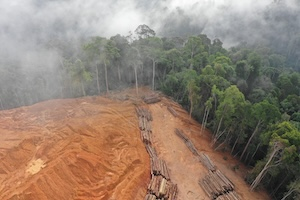
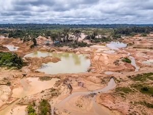

About this project
The Amazon Rainforest, commonly called the "Lungs of the Earth," is an immense tropical forest teeming with life and ecological significance, stretching across much of South America.
Renowned for its extraordinary biodiversity, it serves as a cornerstone of the planet's ecological balance. the rainforest is not only home to an incredible diversity of species, it also has a critical cooling effect on the planet because its trees channel heat high into the atmosphere.
The Amazon Rainforest has faced significant changes due to deforestation and climate change. This website provides an interactive view of how these effects have unfolded over the years.
"The rainforest is not only home to an incredible diversity of species, it also has a critical cooling effect on the planet because its trees channel heat high into the atmosphere." –Antonio Nobre, Climate Scientist, Advocte for the Amazon
Deforestation
"Deforestation is the purposeful clearing of forested land. Throughout history and into modern times, forests have been razed to make space for agriculture and animal grazing, and to obtain wood for fuel, manufacturing, and construction."
Learn MoreMining
"Since the turn of the century, mining has increased by 52% due to surging demand for coal, iron, industrial minerals, and other metals. In some cases, this extraction has come at the expense of forests, along with burdens to the communities who rely on them."
Learn MoreAgriculture

"As we rely on industrial agricultural commodities such as palm, soy, and industrial-produced meat and dairy, we are losing forests and accelerating a climate and ecological emergency."
Learn More